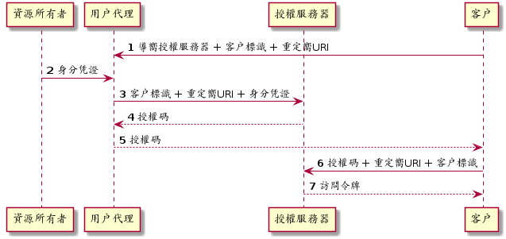
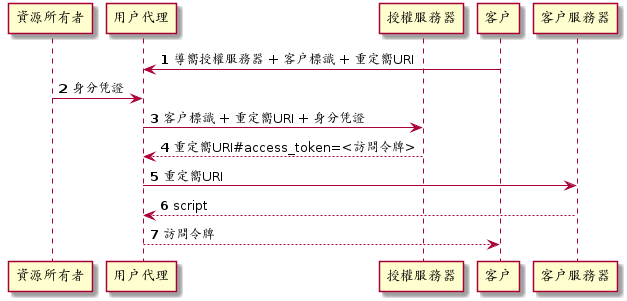
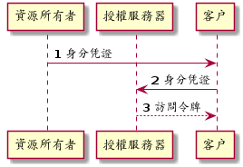

目標
-
理解認證「Authentication」與授權「Authorization」
-
理解 OAuth 協議
-
使用 Spring Cloud Security 實現 OAuth 認證與授權
-
在 API Gateway 實現認證
設計
認證與授權
身分驗證（英語：Authentication）又穪「認證」、「鑒權」，是指通過一定的手段，完成對用戶身分的確認。
身分驗證的目的是確認當前所聲穪為某種身分的用戶，確實是所聲穪的用戶。在日常生活中，身分驗證並不罕見；比如，通過檢查對方的證件，我們一般可以確信對方的身分。雖然日常生活中的這種確認對方身分的做法也屬於廣義的「身分驗證」，但「身分驗證」一詞更多地被用在電腦、通信等領域。
https://zh.wikipedia.org/wiki/身份认证
授權（英語：Authorization）一般是指對資訊安全或電腦安全相關的資源定義與授多存取權限，尤指存取控制。動詞「授權」可指定義存取策略與接受存取。
https://zh.wikipedia.org/wiki/授權_(資安)
一次資源訪問行為可描述為：某人對某物做某個行為。認證是驗證某人為何人，而授權則驗證某人可否對某物做某個行為。舉個例子，類目管理員添加新的商品。當中，人為類目管理員，物為新的商品，行為為添加。認證階段驗證其人是否真為所宣穪的類目管理員，授權階段則驗證類目管理員是否有權添加新的商品。
架構
按照 OAuth 協議實現單點登入模式。 採用單點登入模式。採用 Cloud Foundry 的 UAA 實現認證與授權。在 Gateway處認證校驗。各個服務再作具體的授權校驗。
以 Catalog 服務為例，

OAuth
開放授權（OAuth）是一個開放標準，允許用戶讓第三方應用存取該用戶在某一網站上儲存的私密的資源（如相片，影片，聯絡人列表），而無需將用戶名穪和密碼提供給第三方應用。
OAuth 允許用戶提供一個權仗，而不是用戶名穪和密碼來存取他們存放在特定服務提供者的資料。每一個權仗授權一個特定的網站（例如，影片編輯網站）在特定的時段（例如，接下來的2小時內）內存取特定的資源（例如僅僅是某一相簿中的影片）。這樣，OAuth 讓用戶可以授權第三方網站存取他們儲存在另外服務提供者的某些特定資訊，而非所有內容。
https://zh.wikipedia.org/wiki/开放授权
-
當用戶使用第三方應用時，比如使用圖片編輯應用訪問在線相冊中的相片，第三方應用需從資源服務器處訪問資源；
-
資源服務器會要求授權。完整應該是要求先認證再授權。但對任何請求，如果沒有聲明身分則都被視為匿名用戶「Anonynous」；
-
第三方應用像資源所有者即用戶請求認證；
-
資源所有者將自已的身分凭證，如密碼等，交給第三方应用；
-
第三方應用將資源所有者的身分凭證及資源請求一同提交給資源服務；
-
資源服務器校驗身分凭證；
-
資源服務器按照身分授於相應的權限；
-
資源服務器確認第三方應用具有相應的權限後，返回資源。
該機制的缺點很明顯，資源所有者必須將身分凭證交由第三方應用。第三方應用有意濫用或無意泄露都會使資源用者所有的資源都受到非法訪問。
而 OAuth 避免了第三方應用接觸到資源所有者身分凭證。
OAuth 定義了四種⻆色：
- 資源所有者「resource owner」
-
一個有能力授予受保護資源訪問的實體。當資源所有者為人時，其指代最終用戶。
- 資源服務器「resource server」
-
持有受保護資源的服務器，有能力接受和响應用帶有訪問令牌的受保護資源請求。
- 客戶「client」
-
代資源所有者執行受保護資源請求與授權的應用。"客戶"一詞沒有指定任何特定的實現特征（比如，無論該應用是運行在服務器、桌面或其它設備上）。
- 授權服務器「authorization server」
-
在成功認證資源所有者及獲取授權後簽發訪問令牌的服務器。
一個典型的 OAuth 認證授權過程如下：

-
客戶嚮資源所有者請求授權。該授權請求可以是直接發給資源所有者，也可以經由授權服務器中轉。
-
客戶收到授權補助。該授權補助內容取決於所選用的授權凭證類型。OAuth2 定義了四種授權補助類型。
-
客戶嚮授權服務器提交授權補助以換取訪問令牌。
-
授權服務器認證客戶，校驗授權補助，如有效則頒發訪問令牌。
-
客戶訪問受保護資源，並同時嚮資源服務器出示訪問令牌。
-
資源服務器校驗訪問令牌，若有效則响應受保護的資源。
OAuth2 定義了四種授權補助類型：Authorization Code, Implicit, Resource Owner Password Credentials 和 Client Credentials.
- Authorization Code
-
該類型將授權服務器作為客戶與資源所有者之間的媒介。不同於從資源所有者直接請求授權，客戶將資源所有者導嚮授權服務器，授權服務器再將資源所有者導回客戶同時帶上授權補助。
Figure 4. Authorization Code-
客戶開始這個流程，將資源所有者的用戶代理導嚮授權服務器。客戶提供客戶標識、請求範圍、本地狀態和重定嚮URI，授權服務器會在訪問被允許時攴回這些信息給用戶代理。
-
資源所有者將自己的身分凭證提交給用戶代理。
-
用戶代理將身分凭證連同客戶標識及重定嚮URI一起提交給用授權服務器。
-
授權服務器校驗客戶標識、重定URI及資源所有者身分凭證，若通過則返回授權碼給用戶代理。
-
用戶代理將授權碼交給客戶。
-
客戶嚮授權服務器提交授權、重定嚮URI及客戶標識。
-
授權服務器將訪問令牌發送給客戶所提供的重定嚮URI。
-
在這個認證授權過程中，客戶自始至終都沒有接觸到資源所有者身分凭證，確保了資源所有者的身分凭證不會被客戶濫用或泄露。授權服務器將訪問令牌發送給合法的重定嚮URI而非在HTTP响應中返回，阻止了攻擊者冒充客戶。
- Implicit
-
該類型是為運行於瀏覧器的客戶而優化的簡版 Authorization Code 流程。在此流程中，不再頒發授權碼給客戶，而是直接頒發訪問令牌給客戶。
Figure 5. Implicit-
客戶開始這個流程，將資源所有者的用戶代理導嚮授權服務器。客戶提供客戶標識、請求範圍、本地狀態和重定嚮URI，授權服務器會在訪問被允許時攴回這些信息給用戶代理。
-
資源所有者將自己的身分凭證提交給用戶代理。
-
用戶代理將身分凭證連同客戶標識及重定嚮URI一起提交給用授權服務器。
-
授權服務器將用戶代理重定嚮至之前提供的URI，並將訪問令牌以 fragment 的形式附加至 URI。
-
用戶代理重定嚮至URI，該URI一般跟客戶強綁定。
-
該URI返回一段可在瀏覧器中執行的腳本，該腳本將從 URI 的 fragment 中解出訪問令牌。
-
用戶代理將訪問令牌交給客戶。
-
- Resource Owner Password Credentials
-
該類型直接使用資源所有者的密碼凭證（如用戶名和密碼）獲取訪問令牌。應僅當資源所有者與客戶之間高度信任的情況下使用此類型。
Figure 6. Resource Owner Password Credentials-
資源所有者將其身分凭證（一般是用戶名和密碼）提供給客戶。
-
客戶將資源使用者的身分凭證提交給授權服務器。
-
授權服務器將訪問令牌返回給客戶。
-
- Client Credentials
-
直接用客戶凭證獲取訪問令牌。此方式類型應僅用於獲取客戶所拥有的受保資源的訪問權限。
 Figure 7. Client Credentials
Figure 7. Client Credentials-
客戶嚮授權服務器提交自己的凭證（client_id 和 client_secret）。
-
授權服務器校驗客戶凭證，若通過則返回訪問令牌。
-
Access Token
當嚮資源服務器請求受保護資源時，有三種方式可以傳送訪問令牌「Access Token」。
- Authorization 請求頭
-
當以 Authorization 請求頭傳送訪問令牌時，應使用"Bearer"方案。例如
GET /resource HTTP/1.1 Host: server.example.com Authorization: Bearer mF_9.B5f-4.1JqM - Form-Econded 請求體
-
當以請求體的一部份傳送訪問令牌時，請求體的內容類型必須為
application/x-www-form-urlencoded。例如POST /resource HTTP/1.1 Host: server.example.com Content-Type: application/x-www-form-urlencoded access_token=mF_9.B5f-4.1JqM - URI 請求參數
-
訪問令牌也可以以查詢參數
access_token的形式被傳送。例如GET /resource?access_token=mF_9.B5f-4.1JqM HTTP/1.1 Host: server.example.com
Spring Security
Spring Security 是一個強大的，高度可客製化的認證與訪問控制框架。其是保護基於 Spring 的應用的事實上的標準。
Spring Security 是一個專注於為 Java 應用提供認證與授權的框架。與所有 Spring 項目一樣，在發覺其是多麼容易地被擴展以滿足客戶需求才能明白 Spring Security 真實的力量。
https://spring.io/projects/spring-security#overview
認證
認證的核心為接口 AuthenticationManager 及其實現 AuthenticationProvider。
AuthenticationManager 僅有一個方法 authenticate()，該只會做三件事：
-
若輸入的凭證是有效的，則返回一個
Authentication对象； -
若輸入的凭證是無效的，則拋出一個
AuthenticationException； -
若無法決定，則返回
null。
最常用的 AuthenticationManager 實現為 ProviderManager，其將認證工作委派給一串 AuthenticationProvider 實例。AuthenticationProvider 提供了兩個方法 authenticate 和 supports。多個 AuthenticationProvider 以責任鏈模式串聯在一起，輸入的凭證將逐一經過 AuthenticationProvider。每個 AuthenticationProvider 先用 supports 判斷是否支持校驗該類型的凭證，若是則使用 authenticate 校驗凭證，若否則交由下一個 AuthenticationProvider 處理。

ProviderManager 本身包含一個可選的上級 AuthenticationManager，通過其實現多級委派。有時應中受保護的資源被分為多個組，每組使用不同的 AuthenticationManager。當當前 AuthenticationManager 無法做出決定時則回退至上級 AuthenticationManager。
授權
授權的核心是 AccessDecisionManager。框架提供的三個實現類 AffirmativeBased, ConsensusBased, UnanimousBased 皆以責任鏈模式將訪問決定委派給一串 AccessDecisionVoter。
- AffirmativeBased
-
若有一個及以上
AccessDecisonVoter同意則允許，若有一個及以上AccessDecisionVoter反對且無任何AccessDecisionVoter同意則拒絕。此為默認AccessDecisionManager。 - ConsensusBased
-
若表示同意的
AccessDecisionVoter大於表示反對的則允許，反之則拒絕。 - UnanimousBased
-
若所有
AccessDecisionVoter都同意則允許，否則拒絕。

AccessDecisionVoter 接受一個 authentication 和一個用 ConfigAttributes 裝飾的受保護的 Object。Object 是完全通用的的其表示用戶想要訪問的資源（URL、方法等等）。ConfigAttributes 也是相當地通用，其表示訪問 Object 所需要的權限（如拥有某些⻆色）。

Web Security
Java Servlet 定義了請求處理框架。客戶端發送過來的請求先經過過濾器「Filter」鏈，再交由 Servlet 處理。Servlet 處理後的結果再反嚮經過過濾器鏈，最後再發回給客戶端。

Spring MVC 實現了 Servlet DispatcherServlet，將請求導嚮 Controllers。Spring Security 將 FilterChainProxy 插入到過濾器鏈中。

Spring Cloud Security
Spring Cloud Security提供了一組原語，用於以最少的麻煩構建安全的應用程序和服務。可通過外部（或集中地）深度配置的聲明式模型，可被用於實現包含協作，遠程組件，一般還有集中式標識管理服務的大型係統。在 Cloud Foundry 等服務平台中使用其也非常容易。基於 Spring Boot 和 Spring Security OAuth2，我們可以快速地創建實現常見模式（如單點登錄、令牌中繼和令牌交換）的系統。
實現
UAA
User Account and Authentication (UAA) 是一個由 Cloud Foundry 開發並維護的，兼容 OAuth2 的授權服務器實現。UAA 的配置與使用不在本文的範圍之內。請使用提供的 Dockerfile 構建 UAA Docker 鏡像並運行之：
-
在命令行中，克隆包含 UAA Dockerfile 及本文適用的配置文件的 GitHub 倉庫：
git clone git://github.com/rscai/microservices-uaa.git -
然後，進入至項目根目錄：
cd microservices-uaa ls可以發現其包含了構建 Docker 鏡像所需的 Dockerfile 及 UAA 配置文件：
Dockerfile READ.adoc host-manager.xml manager.xml server.xml tomcat-users.xml uaa.yml
-
構建 Docker 鏡像：
docker build --tag uaa . -
創建 Docker 容器並運行（在容器內，UAA監聽在端口8090。將其映射至宿主端口9103）：
docker run -p 9103:8090 --name=uaa uaa
為了方便，客戶信息（OAuth2 中的客戶）及測試用戶信息都硬編碼在 uaa.yml 中。
...
oauth:
user:
authorities:
- openid
- scim.me
- password.write
- scim.userids
- uaa.user
- approvals.me
- oauth.approvals
clients:
gateway: (1)
name: gateway (2)
secret: secret
authorized-grant-types: authorization_code (3)
scope: uaa.user,openid,profile,email,catalog.read,catalog.write,inventory.read,inventory.write,order.use,order.operate (4)
authorities: uaa.resource
redirect-uri: http://localhost:9101/login/oauth2/code/gateway (5)
service: (6)
name: service
secret: secret
authorized-grant-types: password
scope: uaa.user,openid,profile,email,catalog.read,catalog.write,inventory.read,inventory.write,order.use,order.operate
authorities: uaa.resource
scim:
groups:
email: Access your email address
catalog.read: Read catalog (7)
catalog.write: Write catalog
inventory.read: Read inventory
inventory.write: Write inventory
order.use: Create, submit, cancel and close owned order
order.operate: cancel, mark pay, start delivery and complete order
users:
- customer1|password|customer1@provider.com|first1|last1|uaa.user,profile,email,catalog.read,inventory.read,order.use (8)
- customer2|password|customer2@provider.com|first2|last2|uaa.user,profile,email,catalog.read,inventory.read,order.use
- catalog_ops|password|catalog_ops@provider.com|catalog|ops|uaa.user,profile,email,catalog.read,catalog.write
- inventory_ops|password|inventory_ops@provider.com|inventory|ops|uaa.user,profile,email,inventory.read,inventory.write
- order_ops|password|order_ops@provider.com|order|ops|uaa.user,profile,email,order.use,order.operate
- inventory_service|password|inventory_service@provider.com|inventory|service|uaa.user,profile,email,catalog.read
- order_service|password|order_service@provider.com|order|service|uaa.user,profile,email,catalog.read,inventory.read,inventory.write
...| 1 | 本例中的網關扮演着 OAuth2 客戶的⻆色。所有的客戶都需在授權服務器中注冊。 |
| 2 | 客戶名即標識和 secret 被用於認證客戶的身份，其一定要與客戶側的一致。 |
| 3 | 注冊網關僅使用 Authorization Code 類型的授權補助。 |
| 4 | 羅列作為客戶的網關所可能申請的所有 Scope。 |
| 5 | 注冊作為客戶的網關的重定嚮URI。授權服務器會比對注冊的重定URI和請求授權碼時的重定嚮URI，若不匹配則拒絕頒發授權碼。 |
| 6 | 注冊另一個客戶。一個授權服務器可服務多個客戶。 |
| 7 | 定義 Scope，格式為 <Scope 名穪>:<描述>。UAA 的 Scope 對應為 Spring Security 的職權「Authority」。 |
| 8 | 注冊用戶，格式為 用戶名|密碼|電郵地址|名|姓|scope 列表（以逗號分隔）。 |
網關
網關要校驗所有請求，若請求未認證則引導至 UAA 做認證與授權，若請求已認證則將訪問令牌一同轉發給後端服務。
首先，在 gateway 的 Gradle 構建文件中引入依賴。
...
dependencies {
implementation 'org.springframework.cloud:spring-cloud-starter-gateway'
implementation 'org.springframework.cloud:spring-cloud-starter-netflix-eureka-client'
implementation 'org.springframework.cloud:spring-cloud-starter-oauth2' (1)
implementation 'org.springframework.boot:spring-boot-starter-oauth2-client' (2)
testImplementation('org.springframework.boot:spring-boot-starter-test') {
exclude group: 'org.junit.vintage', module: 'junit-vintage-engine'
}
testImplementation 'org.junit.jupiter:junit-jupiter-api'
testRuntimeOnly 'org.junit.jupiter:junit-jupiter-engine'
}
...| 1 | spring-cloud-starter-oauth2 引入了依賴 org.springframework.cloud:spring-cloud-security 和 org.springframework.security.oauth.boot:spring-security-oauth2-autoconfigure。spring-cloud-security 提供一些用於集成 OAuth 與 Spring Cloud 組件如 Spring Cloud Gateway，Spring Cloud OpenFeign 的類。spring-security-oauth2-autoconfigure 顧名思義，其提供了 OAuth2 相關的自動配置。 |
| 2 | spring-boot-starter-oauth2-client 引入了 org.springframework.security:spring-security-oauth2-client 和 org.springframework.security:spring-security-oauth2-jose。 |
然後，通過 Java Config 類 SecurityConfig 配置 SecurityWebFilterChain。
package io.github.rscai.microservices.gateway;
import org.springframework.context.annotation.Bean;
import org.springframework.context.annotation.Configuration;
import org.springframework.security.config.web.server.ServerHttpSecurity;
import org.springframework.security.oauth2.client.registration.ReactiveClientRegistrationRepository;
import org.springframework.security.web.server.SecurityWebFilterChain;
@Configuration (1)
public class SecurityConfig {
@Bean
public SecurityWebFilterChain springSecurityFilterChain(ServerHttpSecurity http,
ReactiveClientRegistrationRepository clientRegistrationRepository) { (2)
// Authenticate through configured OpenID Provider
http.oauth2Login(); (3)
// Require authentication for all requests
http.authorizeExchange().anyExchange().authenticated(); (4)
// Disable CSRF in the gateway to prevent conflicts with proxied service CSRF
http.csrf().disable(); (5)
return http.build();
}
}| 1 | 使用注解 @Configuration 以聲明此類為 Spring 配置類，Spring 會依此組裝相應的 Bean； |
| 2 | 聲明一個 SecurityWebFilterChain 類型的 Bean，Spring Security 會將其插入至 WebFlux 的過濾鏈中。 |
| 3 | 指明使用 OAuth2 認證機制； |
| 4 | 聲明所有的請求都需經過認證； |
| 5 | 關閉 CSRF。跨站請求偽造（英語：Cross-site request forgery），也疲穪為 one-click attack 或者 session riding，通常縮寫為 CSRF 或者 XSRF，是一種挾制用戶在當前已登入的 Web 應用程式上執行非本意的操作的攻擊方法。 |
最後，通過 application YAML 配置 Spring Security。
...
security:
oauth2:
client:
registration:
gateway: (1)
provider: uaa (2)
client-id: gateway (3)
client-secret: secret (4)
authorization-grant-type: authorization_code (5)
redirect-uri: "http://localhost:9101/login/oauth2/code/{registrationId}" (6)
scope: uaa.user,openid,profile,email,catalog.read,catalog.write,inventory.read,inventory.write,order.use,order.operate (7)
provider:
uaa: (8)
authorization-uri: http://localhost:9103/uaa/oauth/authorize (9)
token-uri: http://localhost:9103/uaa/oauth/token (10)
user-info-uri: http://localhost:9103/uaa/userinfo (11)
user-name-attribute: sub
jwk-set-uri: http://localhost:9103/uaa/token_keys (12)
...| 1 | 網關在 OAuth 協議中扮演着 client 的⻆色，所以要定義 client 相關的屬性； |
| 2 | provider 指 authorization server，本例中使用 UAA 實現 authorization server，其具體信息將在獨立章節中定義； |
| 3 | client 的標識，需與 UAA 中的配置匹配； |
| 4 | client 的密鑰，用作 client 的身分凭證，需與 UAA 中的配置匹配； |
| 5 | OAuth2 定義了四種獲取訪問令牌的方式：Authorization Code, Implicit, Resource Owner Password Credentials 及 Client Credentials。本例使用 Authorization Code 型的 Authorization Grant。 |
| 6 | 當資源所有者在 UAA 完成了認證與授權之後，UAA 將會把授權碼傳送到這個URI。 |
| 7 | Gateway 作為客戶所可能申請的所有 Scope，Scope 對應 Spring Security 中的 Authority。比如，Scope catalog.read 對應 Spring Security 中的 Authority SCOPE_catalog.read。 |
| 8 | 接着描述授權服務器 uaa。 |
| 9 | 當網關發現訪問受保護資源的請求未授權時，則會重定嚮用戶代理（一般是瀏覧器）至 authorization-uri，以認證資源所有者凭證並要求授權。 |
| 10 | 當作為客戶的網關得到授權碼之後，則會訪問 token-uri 從授權服務器獲取訪問令牌。 |
| 11 | 作為客戶的網關得到訪問令牌之後，可以訪問 user-info-uri 從授權服務器獲取資源所有者的其它信息。 |
| 12 | 當作為用戶的網關得到訪問令牌後，應使用相應的公鑰校驗令牌簽名以確定其是合法的。 |
資源服務器
資源服務器需要校驗訪問令牌，再檢驗訪問令牌是否包含具體資源的授權。
以 Catalog 服務為例，首先引入依賴。
...
dependencies {
asciidoctor 'org.springframework.restdocs:spring-restdocs-asciidoctor'
implementation 'org.springframework.boot:spring-boot-starter-data-mongodb'
implementation 'org.springframework.boot:spring-boot-starter-web'
implementation 'org.springframework.boot:spring-boot-starter-data-rest'
implementation 'org.springframework.boot:spring-boot-starter-actuator'
implementation 'org.springframework.cloud:spring-cloud-starter-netflix-eureka-client'
implementation 'org.springframework.boot:spring-boot-starter-security' (1)
implementation 'org.springframework.security:spring-security-oauth2-resource-server' (2)
implementation 'org.springframework.security:spring-security-oauth2-jose' (3)
testImplementation 'org.springframework.boot:spring-boot-starter-test'
testImplementation 'org.springframework.restdocs:spring-restdocs-mockmvc'
testImplementation 'de.flapdoodle.embed:de.flapdoodle.embed.mongo'
testImplementation 'org.springframework.security:spring-security-test' (4)
}
...| 1 | spring-boot-starter-security 引入了 org.springframework.security:spring-security-web、org.springframework.security:spring-security-core 和 org.springframework.security:spring-security-config，其包含了 Spring Security 基礎的類及跟 Web 應用集成所需的工具類。 |
| 2 | spring-security-oauth2-resource-server 提供了資源服務器所需的實現。 |
| 3 | spring-security-oauth2-jose 提供了對 JWT 令牌的支持。 |
| 4 | spring-security-test 提供測試工具，比如模拟認證用戶等。 |
然後，以 Java Config 形式配置 Spring Security。
@Profile("!test") (1)
@EnableWebSecurity (2)
@EnableGlobalMethodSecurity(securedEnabled = true, prePostEnabled = true) (3)
public class SecurityConfig extends WebSecurityConfigurerAdapter { (4)
@Override
protected void configure(HttpSecurity http) throws Exception {
http
.csrf().disable() (5)
.authorizeRequests() (6)
.anyRequest().authenticated() (7)
.and()
.oauth2ResourceServer() (8)
.jwt(); (9)
}
}| 1 | 利用 Spring Boot 的 Profile 特性，在測試場景中不啟用安全配置但在其它場景中啟用。 |
| 2 | 使用注解 @EnableWebSecurity 啟用安全機制。 |
| 3 | 使用注解 @EnableGlobalMethodSecurity 啟用方法層級的安全機制，本服務採用 Spring Data REST 構建 RESTFul 服務，所以在 Repository 方法聲明訪問控制是最合理的。 |
| 4 | 繼承 org.springframework.security.config.annotation.web.configuration.WebSecurityConfigurerAdapter 並覆寫方法 configure(HttpSecurity http) 以配置安全措施。 |
| 5 | 關閉 CSRF。 |
| 6 | 安全措施作用於所有請求。 |
| 7 | 所有請求首先必需是認證過的。 |
| 8 | 本服務採用 OAuth2 協議且扮演資源服務器的⻆色。 |
| 9 | 採用 JWT 類型的令牌。 |
最後，在 Repository 的方法上聲明所需的權限。
@PreAuthorize("hasAuthority('SCOPE_catalog.read')") (1)
@RepositoryRestResource(collectionResourceRel = "products", path = "products")
public interface ProductRepository extends MongoRepository<Product, String> {
String AUTHORITY_CATALOG_WRITE = "hasAuthority('SCOPE_catalog.write')";
@PreAuthorize(AUTHORITY_CATALOG_WRITE) (2)
@Override
<S extends Product> S save(S entity);
@PreAuthorize(AUTHORITY_CATALOG_WRITE)
@Override
<S extends Product> List<S> saveAll(Iterable<S> entities);
@PreAuthorize(AUTHORITY_CATALOG_WRITE)
@Override
void delete(Product entity);
@PreAuthorize(AUTHORITY_CATALOG_WRITE)
@Override
void deleteAll();
@PreAuthorize(AUTHORITY_CATALOG_WRITE)
@Override
void deleteAll(Iterable<? extends Product> entities);
@PreAuthorize(AUTHORITY_CATALOG_WRITE)
@Override
void deleteById(String s);
}| 1 | 使用注解 @PreAuthorize 以 Spring-EL 聲明必需的權限。@PreAuthorize 可以作用於方法也可作用於整個類。當作用於整個類時，等同於作用於該類所有的方法。 |
| 2 | @PreAuthorize 作用於方法，是在類級的 @PreAuthorize 的基礎上再附加權限要求。比如，要調用方法`save(S entity)，請求者必須滿足 `hasAuthority('SCOPE_catalog.read') 和 hasAuthority('SCOPE_catalog.write')。 |
Spring 表逹式語言（縮寫為"SpEL"）是一種強大的，支持運行時查詢和編輯對象圖的表逹式語言。該語言的語法與 Unified EL 相似但其提供了更多的特性，特殊方法調用和基本的字符串模板化功能。
https://docs.spring.io/spring/docs/current/spring-framework-reference/core.html#expressions
Spring Security 內建一些表逹式，以方便應用開發者檢驗以 Authentication 對象形式展現的認證與授權信息。
| 表逹式 | 描述 |
|---|---|
hasRole(String role) |
若當前本人拥有該⻆色則返回 |
hasAnyRole(String… roles) |
若當前本人拥有任一⻆色則返回 |
hasAuthority(String authority) |
若當前本人拥有該職權則返回 |
hasAnyAuthority(String… authorities) |
若當前本人拥有任一⻆色則返回 |
principal |
直接訪問當前本人對象。 |
authentication |
直接訪問當前 |
permitAll |
永遠為 |
denyAll |
永遠為 |
isAnonymous() |
若當前本人是匿名用戶則返回 |
isRememberMe() |
若當前本人是 remember-me 用戶則返回 |
isAuthenticated() |
若當前本人為非匿名用戶則返回 |
isFullyAuthenticated() |
若前前本人非匿名且非 remember-me 則返回 |
hasPermission(Object target, Object permission) |
若該用戶拥有某對象的某許可則返回 |
hasPermission(Object targetId, String targetType, Object permission) |
若該用戶拥有某對象的某許可則返回 |
測試
API 測試
包括安全的 API 測試跟普通的 API 測試相似，僅增加了認證用戶的模擬。
以 Product 的 API 為例，
@ActiveProfiles("test") (1)
@Import(RestDocsMockMvcConfiguration.class)
@RunWith(SpringRunner.class)
@SpringBootTest(classes = CatalogApplication.class)
@AutoConfigureMockMvc(addFilters = false) (2)
@AutoConfigureRestDocs
public class ProductTest {
private static final String ENDPOINT = "/products";
private static final String SCOPE_CATALOG_READ = "SCOPE_catalog.read";
private static final String SCOPE_CATALOG_WRITE = "SCOPE_catalog.write";
@Autowired
private MockMvc mvc;
@Autowired
private ObjectMapper objectMapper;
@Autowired
private ProductImageRepository imageRepository;
@Autowired
private ProductRepository productRepository;
...
@Test
@WithMockUser(username = "catalog_ops", authorities = {SCOPE_CATALOG_READ, SCOPE_CATALOG_WRITE}) (3)
public void testCreateAndGet() throws Exception {
final String imageALink = obtainLinkOfImage(imageAId);
final String imageBLink = obtainLinkOfImage(imageBId);
final String title = "New Product";
final String ELECTRONICS = "Electronics";
final String MOBILE = "Mobile";
String createResponse = mvc.perform(
post(ENDPOINT).accept(MediaType.APPLICATION_JSON).contentType(MediaType.APPLICATION_JSON)
.content(String.format(
"{\"title\":\"%s\",\"tags\":[\"%s\",\"%s\"],\"images\":[\"%s\",\"%s\"]}",
title, ELECTRONICS, MOBILE, imageALink, imageBLink)))
.andDo(print())
.andExpect(status().isCreated())
.andExpect(jsonPath("$.title", is(title)))
.andExpect(jsonPath("$.createdAt", notNullValue()))
.andExpect(jsonPath("$.updatedAt", notNullValue()))
.andExpect(jsonPath("$._links.images", notNullValue()))
.andDo(document("product/create", links(), requestFields(
fieldWithPath("images").type(JsonFieldType.ARRAY)
.description("links of referred ProductImage")), responseFields()))
.andReturn().getResponse().getContentAsString();
String productId = Stream
.of(objectMapper.readTree(createResponse).at("/_links/self/href").asText().split("/"))
.reduce((first, second) -> second).orElse(null);
mvc.perform(get(ENDPOINT + "/{id}", productId).accept(MediaType.APPLICATION_JSON))
.andExpect(status().isOk())
.andExpect(jsonPath("$.title", is(title)))
.andExpect(jsonPath("$.createdAt", notNullValue()))
.andExpect(jsonPath("$.updatedAt", notNullValue()))
.andExpect(jsonPath("$._links.images", notNullValue()))
.andDo(document("product/getOne", links(),
pathParameters(parameterWithName("id").description("catalog's id")), responseFields()));
mvc.perform(get(ENDPOINT + "/{id}/images", productId).accept(MediaType.APPLICATION_JSON))
.andExpect(status().isOk())
.andExpect(jsonPath("$._embedded.productImages", hasSize(2)))
.andDo(document("product/getImages",
pathParameters(parameterWithName("id").description("catalog's id"))));
}
...| 1 | 顯式激活 profile test。還記我們聲明安全配置 SecurityConfg 祗在非 test profile 時才激活麼？安全配置 SecurityConfig 顯示指名採用 OAuth2 協議，但模擬兼容 OAuth2 的授權服務器太困難了，所以我們選擇在測試中不集成 OAuth2，而是模擬認證用戶即 Authentication 對象。 |
| 2 | addFilters = false 是在測試中停用安全配置的必要步驟。Spring Security 是以嚮過濾器鏈中插入自己的過濾器的方式與 Spring MVC 應用集成的，且一但相關的類出現在 classpath 中就會觸發 Spring Security 自動配置。所以，必需要在測試中排除過濾器。 |
| 3 | 使用注解 @WithMockUser 在測試方法範圍內模擬認證用戶即 Authentication 對象。通過 @WithMockUser 可以模擬用戶名、⻆色、職權和口令。

Figure 14. WithMockUser.java
|
端到端測試
將 UAA、Catalog 服務、Eureka 和網關全都運行在同一個環境，執行端到端的測試。
首先，創建並啟動 UAA Docker 容器；
docker run -p 9103:8090 --name=uaa uaa或啟動已創建的 UAA Docker 容器：
docker start uaa然後，啟動 Eureka；
cd microservices-eureka
./gradlew bootRun -Dspring.profiles.active=dev再然後，創建並啟動 MongoDB Docker 容器；
docker run -d --name catalog-mongo -p 27018:27017 -v <LOCAL PATH>/catalog-mongo-data:/data/db -e MONGO_INITDB_ROOT_USERNAME=mongoadmin -e MONGO_INITDB_ROOT_PASSWORD=secret mongo:3.4或啟動已創建的 MongoDB Docker 容器；
docker start catalog-mongo再然後，啟動 Catalog 服務；
cd microservices-cata
./gradlew bootRun -Dspring.profiles.active=dev最後，打開瀏覧器訪問 http://localhost:9101/catalog/products。其會重定嚮至 UAA，輸入用戶名密碼並確認授權。最終應能得到 HAL 格式的响應。
觀察 HTTP 報文可以發現，
-
瀏覧器嚮網關發送 GET /catalog/products 請求；
-
網關發覺當前會話未認證，所以重定嚮瀏覧器至自身的認證URI；
-
瀏覧器訪問網關的認證URI；
-
網關根據自身配置，將瀏覧器重定嚮至 UAA 進行認證；
-
瀏覧器訪問 UAA 的認證 URI；
-
UAA 根據授權補助類型 Authorization Code，重定嚮瀏覧器至用戶登入頁面，引導用戶以用戶名密碼認證；
-
瀏覧器訪問用戶登入頁面；
-
瀏覧器將用戶提供的用戶名密碼發送給 UAA；
-
UAA 認證用戶名密碼通過以後，重定嚮瀏覧器至授權確認頁面；
-
瀏覧器訪問授權確認頁面；
-
瀏覧器將用戶的授權確定發送給 UAA；
-
UAA 以重定嚮回網關的形式將授權碼返回；
-
瀏覧器以包含授權碼的URI訪問網關認URI；
-
網關得到授權碼後，嚮 UAA 申請訪問令牌；
-
UAA 返回訪問令牌、刷新令牌及其它信息；
-
網關嚮 UAA 請求公鑰以校驗今牌的簽名；
-
UAA 返回校驗令牌簽名用的公鑰；
-
網關嚮 UAA 請求用戶信息；
-
UAA 返回用戶名、電郵地址等用戶信息；
-
網關將令牌存於當前會話中，返回瀏覧器會話標識，並重定嚮瀏覧器至最初的URL；
-
瀏覧器訪問最初的URL，並在Cookie中提供會話標識；
-
網關從服務注冊處發現 Catalog 服務實例，將請求轉發給其，並將從會話中恢复的訪問令牌以
Authorization頭的形式附上； -
Catalog 服務從 UAA 處請求公鑰以校驗訪問令牌的簽名；
-
UAA 返回公鑰給 Catalog 服務；
-
Catalog 服務校驗過訪問令牌及其包含的職權後，返回受保護的資源給網關；
-
網關把 Catalog 服務的响應轉發給瀏覧器。
總結
本章我們瞭解了認證與授權，OAuth2 協議；使用 Spring Cloud Security 在網關上實現單點登入模式；使用 Spring Security 實現服務端鋻權。